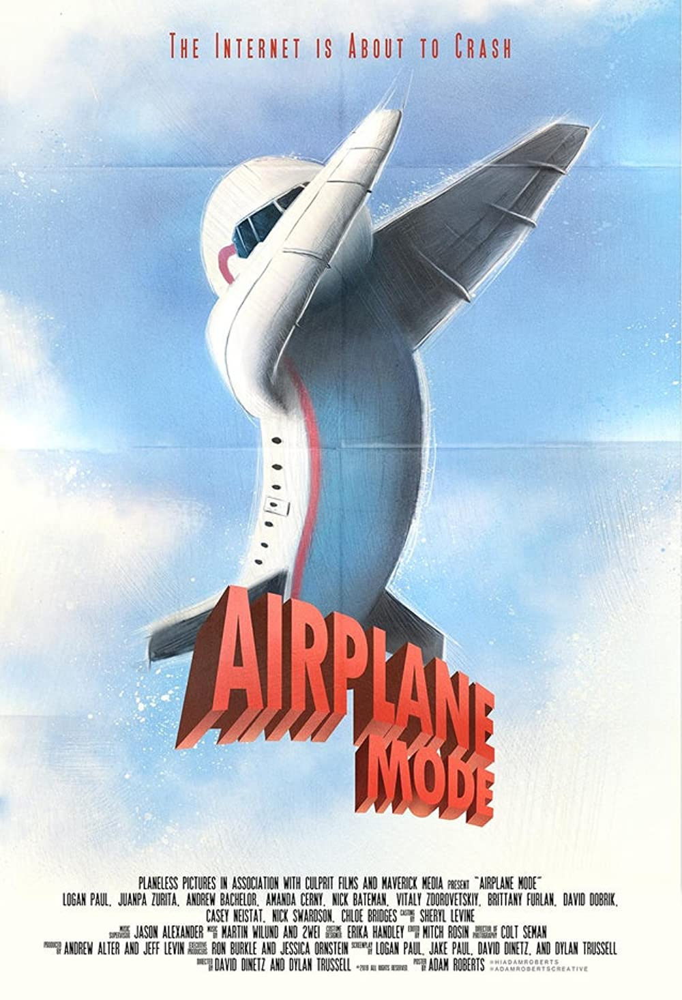

Most animated influencers are a marketing scheme, and just like traditional influencers, they are sponsored by different companies to create review videos and “commercials” for their products. Influencers in general are a new medium of sharing information. Based on their aesthetic, their morals, and the content they share, they attract a specific audience based on age group or niche topic (ex: ways to improve iPad note-taking, recipes for college students, fashion, etc.). The way they earn income can be from a multitude of reasons such as “sponsored social media posts, webinars on social media platforms, becoming a brand ambassador, selling digital products, creating product lines, or website advertising” (Lile). The most prevalent forms of social media both traditional and animated influencers use are Instagram, TikTok, and occasionally YouTube. So what’s the benefit of using a computer graphic over a real human being to market a product?
According to “The Power of Social Media and Its Influence on Corporate Reputation”, “The two factors of online communication that have the biggest impact on corporate reputation are a company's products/services and its public image”. Companies use traditional influencers as assets, but they also are liabilities. More or less, they are seen as an employee and represent the brand to their followers. Due to the fact that they endorse these influencers to post about their products, they also have to deal with any scandals that happen in their personal life and how that plays into their public image. For example, Logan Paul, a popular YouTuber who at the time had 15 million subscribers, had many brands that wanted to work with him due to his ever-growing popularity. But in 2017, he broke the internet and posted a video attempting to be humorous about the japanese suicide forest, Aokigahara. It wasn’t just your average surface level jokes, but rather jokes about the dead bodies present right behind him when he visited. He then became “canceled”, a term used to describe influencers who present some sort of immoral behavior and aren’t supported by the majority of social media users anymore. This not only affected his reputation, but also the reputations of companies who were eager to work with the ever so popular youtuber. For example, Planeless Pictures, a production company, was “formed in 2016 with the specific purpose of producing a film with Paul, now 25, called ‘Airplane Mode’” (Rosenblatt).
After the scandal, Planeless Pictures sued Paul due to the fact that the video caused the company to lose a multi million dollar deal with Google.